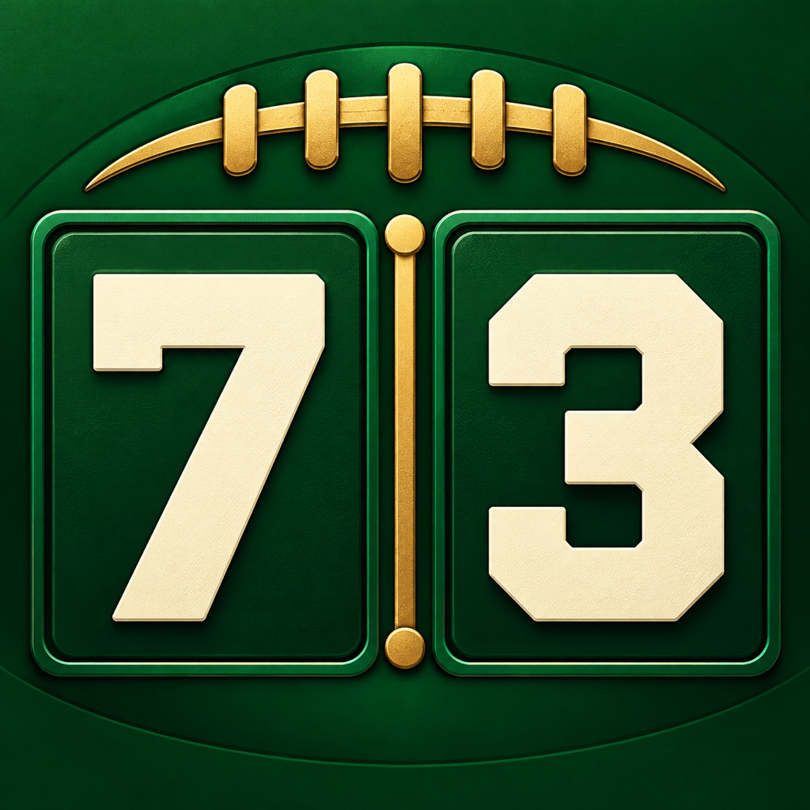

FOOTBALL NUMBERSYour numbers. Every quarter.
Track your numbers.
Catch every match.
Keep your football guesses in one place, follow quarter-by-quarter score matches, and revisit your match history.
Download on the App Store$1.99 one-time purchase · For iPhone · iOS 17 or later
Follow your team
Choose from all 32 NFL teams and track your number pairs against completed quarters and optional final numbers.
Keep your history
Name each guess and revisit saved matches. Your guesses and custom scores stay on your iPhone.
Make it your game
Create offline custom games with your own teams and manual scores. Use quarters, halves, innings, or custom checkpoints.
For personal entertainment. No wagers, entry fees, or prizes. Scores may be delayed or unavailable. Football Numbers is independent and is not affiliated with or endorsed by the NFL or any NFL team.